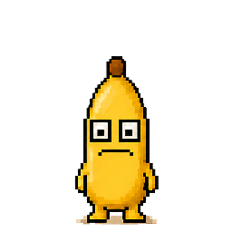
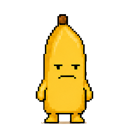

the banana, on windows.
a small companion that sits at the edge of your screen. click write and a cream page opens. save puts it in the same vault as the phone. it is not a second journal.
download for windowssoon
included in both plans. needs the phone app.
two days. i noticed.write

how it pairs
- one
install
open the download. the banana appears in the system tray and sits in a corner of the screen. drag it anywhere.
- two
a code on the phone
in the app: you, then pair a computer, then make a code. six characters, good for ten minutes.
- three
type it once
the computer keeps a key, the phone keeps a list of computers you can remove. from then on it knows if you wrote today.
a day with it
- you wrote: it stands there. one pixel of breathing, nothing else.
- two quiet days: it dims a little and, once or twice, slides in with one line.
- four: it faces the wall. five: the peel, and the phone tells a friend if you set that up.
- click it: a small cream panel with the line and one button, write. a cream page opens on the computer. save puts it in the vault.
on the screen
i have started pacing.write

needs
- windows10 or 11, 64 bit
- installfor the current user, no admin
- webview2windows 11 has it, windows 10 fetches it once
- signingsigned in the steady labs name
will not
- no sound. no bouncing. no badge counts.
- never moves across the screen on its own.
- never lists the vault. a page you type there saves with the rest.
this page is here early so the link in the app has somewhere to point. the download switches on the day the build is signed. there is also a mac version.